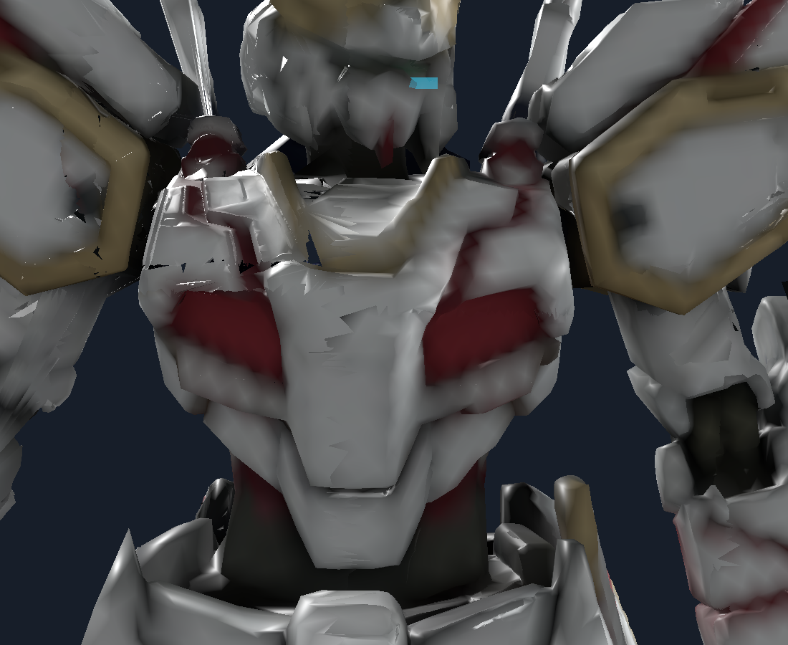
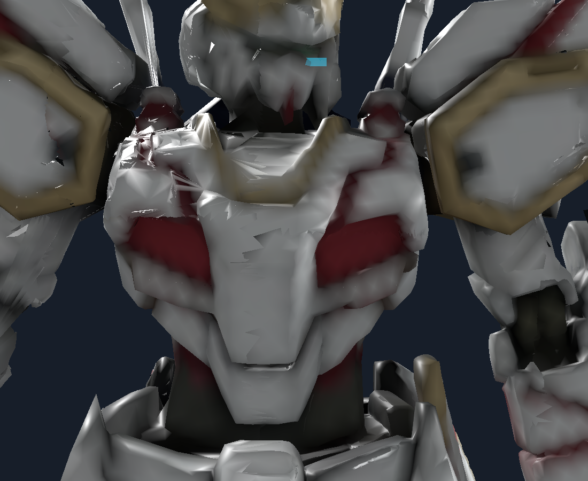
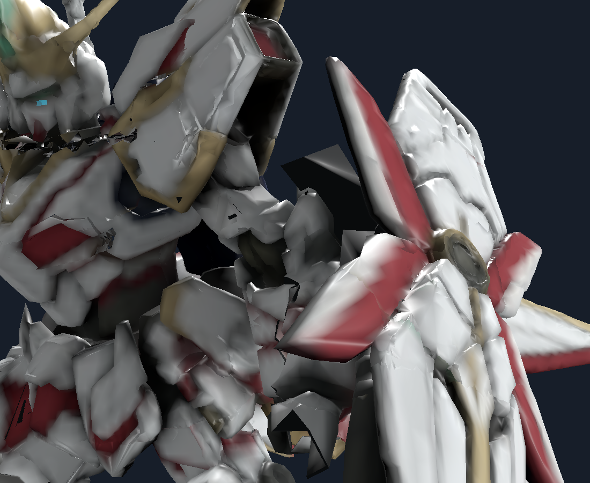

2026-10-06 · 原生引擎输出 · 原贴图 · 图片未修饰
完全体修复进度
0.16.0 已安装，整机外观仍有待修复项。本轮按新方向取消大舱门，改为胸口两块原有红白小装甲配合开合；中央胸甲固定，窄缝后使用原曲面和原贴图。肩臂交界、原胸甲减面尖片及护手附近仍有残缺轮廓。本轮已修正小舱门上方凸出的固定内衬黑尖角。功能和几何检查通过不能替代外观验收。正式模组已替换为 0.16.0。
本轮保留的修正
- 盾牌按表面连通与已核对的装饰位置分件，后侧红白装饰、上沿白甲与提手不再误随肩膀转动。取消颜色判断与平面裁切盾牌的试验方案。
- 取消整块胸板下翻与大舱室。两块小装甲各外翻 12°、平移约 1.7 厘米；中央胸甲固定。只露窄缝与两条短灯光，关闭后复位。
- 握柄接触点锁定在一致变换上；肩肘腕保留窄带过渡，粗大的接缝三角面局部分段，静止表面和贴图仍来自原模型。
- 恢复完整左翼后生成镜像右翼。头部、原金色剑饰和已验证剑刃核心保留。
- 内衬保持薄层，限制跨装甲的大块自动封口。改变外观的平面背板、局部自动重建、胸甲削层与零散肩甲重绑均未采用。
仍需修复
- 小舱门是进入动作示意，不表现真实可供人穿过的大型舱室；保留原模型胸甲轮廓。
- 肩臂交界、左臂背侧、持剑护手附近仍有尖片和残缺表面，纠正骨骼归属不能解决融合雕塑的全部切口。
- 局部重建试验出现贴图锯齿和鼓包，未采用。下一步需要按具体装甲轮廓重建这些局部表面、投射原贴图，再逐动作验收。
已安装版本验证
原生功能回归 705 项通过，失败 0；主离线检查 63 项通过。模型 244,176 个三角面、32 个分件。源表面及 UV、双翼、剑身归属、96 个金色饰面、1,116 条剑刃射线与双膝机构检查通过。
47 个全身姿态五视图，另加 5 个小舱门阶段三视图，共 250 张；重点近景仍未通过外观验收。1,848 对共享接缝最大计算间隙 4.27e-08 米，只验证这些接缝，不代表整机没有缺面或穿插。
实际装甲剑身净空检查：2514 + 1020 poses passed; minimum distances 0.076584349 / 0.092097722 m, capsule radius 0.065 m。未完成真人驾驶和双机联机视觉验收。
本轮新增：固定封边黑尖角修复
两处原生定位点确认，黑尖角来自向外偏移的固定内衬。改为向内凹入六毫米并沿用原边缘贴图。下图只代表这处缺陷，不代表整机无破损。
上轮：黑色内衬凸出 本轮：封边向内凹入，保留原贴图
本轮：封边向内凹入，保留原贴图 原因对照：原始高精度胸甲（未采用）
原始面片能减少上沿的大片三角碎片；仅恢复法线无明显改善。局部自动接边最大差距约四厘米，直接替换仍会留下接缝，因此试验已撤回。下图是诊断证据，不是当前候选。

仅诊断：原始高精度局部面片，未纳入候选本轮：两块原装甲小舱门
左右面片按原模型分别选取，未强制镜像。拖动下方开合程度可查看原生正面截图。
0%
原生近景：关闭到完全打开下蹲开舱
 替换前的 0.15.0已安装的 0.16.0
替换前的 0.15.0已安装的 0.16.0肘腕与持剑手
侧面翼片与腿部
飞行后视
日常站姿
抬臂蓄力
跨阶抬腿
开舱连续阶段
未通过近景

小舱门开合侧面；肩臂原有残缺仍需修复复核文件
功能报告 · 重放报告 · 实际重放姿态 · 修复指标 · 源码差异 · 状态与哈希
候选：.local-tests/Mecha-0.16.0/candidate；原版备份：.local-tests/Mecha-0.16.0/baseline。候选 DLL 是不带 QA 入口的普通构建。全动作视图与小舱门五阶段三视图保留在对应原生 QA 目录。
替换前完整备份：.local-tests/Mecha-before-install-0.16.0-20261006-224037。安装后的文件一致性与离线检查：63 main checks and Complete asset/profile checks passed。